Lab 5 Overview
Objective
The purpose of this lab is to gain experience with PID control.
Prelab
To make data collection, plotting, and post-processing easier on the Python side, I used an approach similar to the previous labs. I defined arrays of length 600 to store time, ToF distance, system output, and the individual P, I, and D terms. During runtime, the data was stored in these arrays, and after the experiment finished, it was transmitted to the computer through BLE for further analysis.
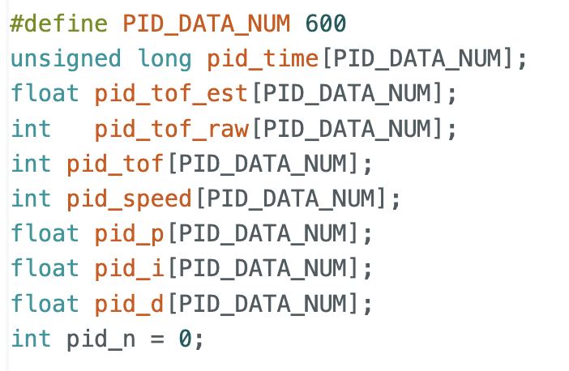
I also implemented a function that allows PID parameters and the target distance to be updated in real time. This made PID tuning much more convenient in the later experiments. In addition, based on the results from the previous lab, I added a calibration factor so that the robot could move forward and backward as straight as possible.
Since this lab only involved forward and backward motion, I implemented separate forward, backward, and stop functions, along with the PID function. In the command handler, I only needed to call the corresponding function for each case. This design also improved the maintainability of the code, making later debugging and modification much easier.
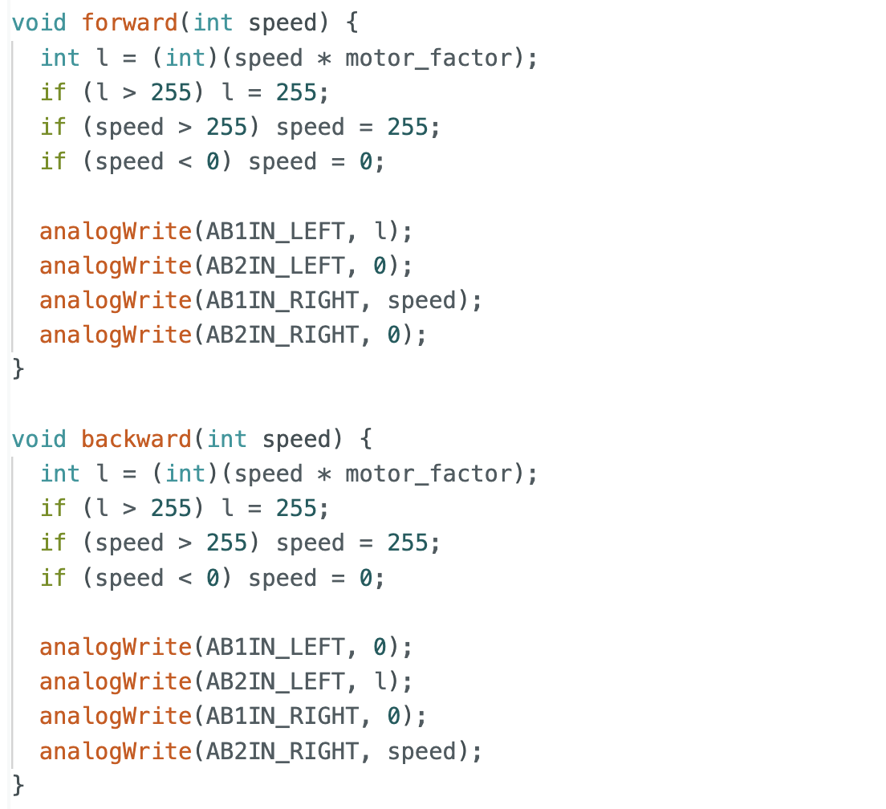
Lab Tasks
PID Discussion
A PID controller consists of three parts: proportional, integral, and derivative control, and its output can be written as
$$u(t) = K_p e(t) + K_i \int_0^t e(\tau), d\tau + K_d \frac{de(t)}{dt}$$
where (e(t)) is the error between the target value and the measured value, and (u(t)) is the control output.
(K_p)provides a correction proportional to the current error, allowing the system to respond quickly.(K_i)accumulates past errors and helps reduce steady-state error.(K_d)responds to the rate of change of the error and helps reduce overshoot and oscillation.
Range / Sampling Time Discussion
For the ToF sensor, I used the same sampling approach as in the previous lab and did not change the default sampling method:
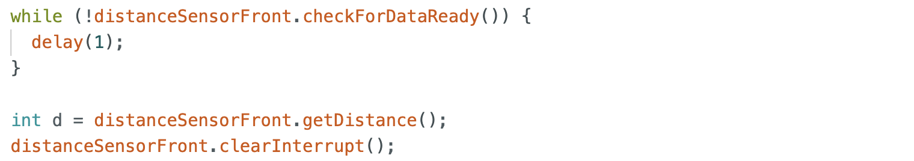
Based on the current experimental results, the sampling frequency was sufficient for PID control. In addition, since extrapolation was later used to estimate distance, the resulting distance curve could still be made smoother. If a different ToF sampling frequency is needed in future experiments, it can be adjusted in the setup stage:
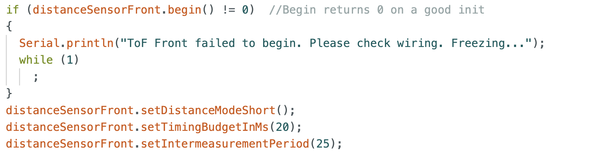
I also tested different sampling rates during the extrapolation section. However, for this lab, a frequency around 10 Hz was already sufficient for basic PID control.
Implementation
In the PID implementation, I adjusted the controller output based on different robot states, following the tips and tricks from the lab as well as initialization considerations.
For example, when the error falls within a defined tolerance range, I set the controller output to zero. This allows the robot to stop more smoothly near the target and also helps clear the accumulated integral error.
In addition, since prev_err is initially zero, directly computing the derivative term at startup may produce a large output. To avoid this, I first computed the error and initialized prev_err to that same value, which reduced the large initial derivative spike and improved stability.
From the previous lab, I also knew the minimum PWM required to move the robot. Therefore, when the error was still relatively large but the PID output was below 40, I forced the output to 40 so that the robot would not stop before reaching the target.
For safety, I also limited the maximum PWM output to 200. Because the calibration factor makes one motor output larger than the other, setting the upper limit too close to 255 could make straight motion less stable. With the limit set to 200, the robot still moved quickly while maintaining stable behavior.
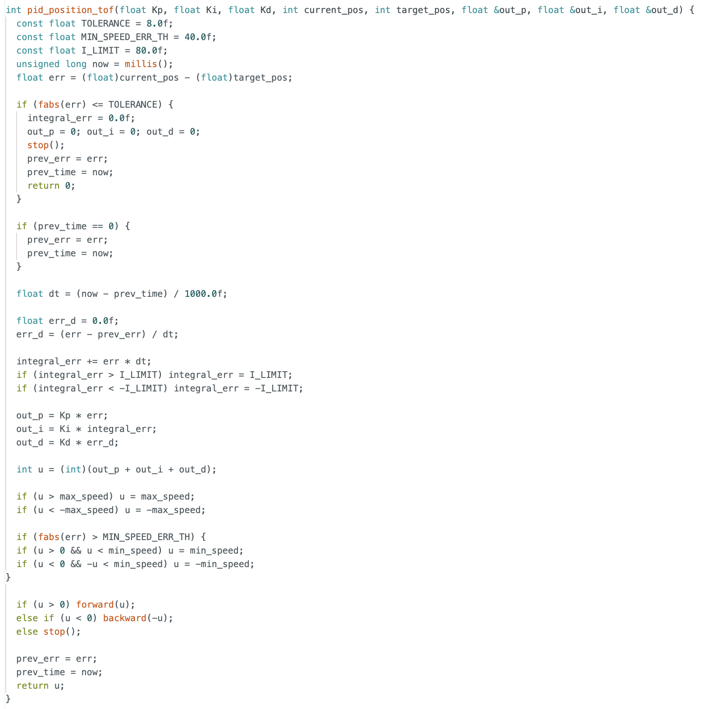
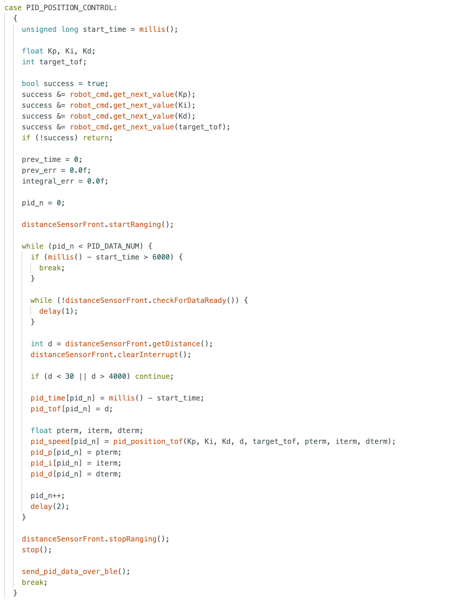
Overall, this was the main control logic. On the Python side, I modified the payload sent over BLE to tune the PID parameters. After collecting the data, I used plotting functions to observe the distance to the wall, the controller output, and the individual P, I, and D terms.
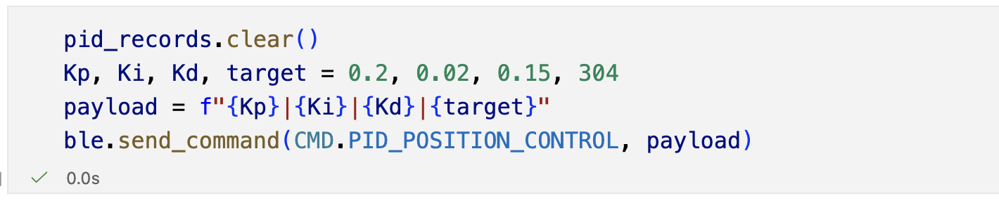
I tested three different sets of PID parameters:
(0.2, 0.01, 0.08), target distance(304)(0.4, 0.02, 0.1), target distance(400)(0.4, 0.02, 0.15), target distance(304)
Here, the first three values correspond to (K_p), (K_i), and (K_d), and the last value is the target distance. The collected data and videos show that the robot could achieve stable behavior under PID control. From the plots, one set of parameters produced a small overshoot before settling back to the target distance.
The results for $K_p = 0.2$, $K_i = 0.01$, and $K_d = 0.08$ are shown below. The robot was able to reach the target distance, and the controller output showed a typical PID response with the P term dominating at the beginning, followed by the I term accumulating over time, and the D term responding to the initial error change.
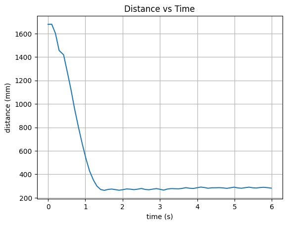
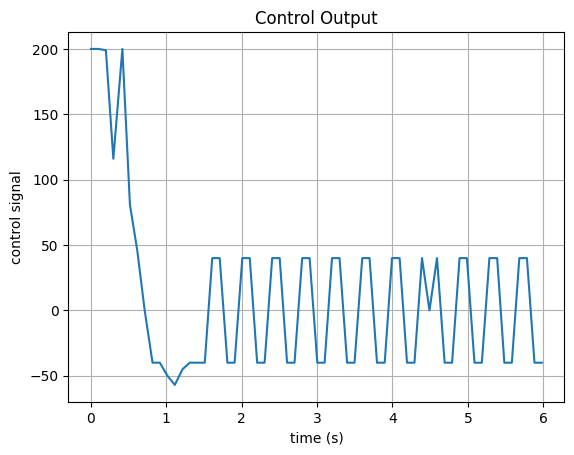
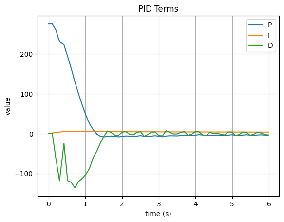
The results for $K_p = 0.4$, $K_i = 0.02$, and $K_d = 0.1$ are shown below. The robot reached the target distance with a slightly overshoot.
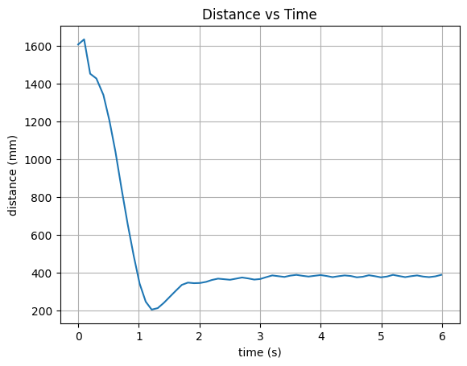
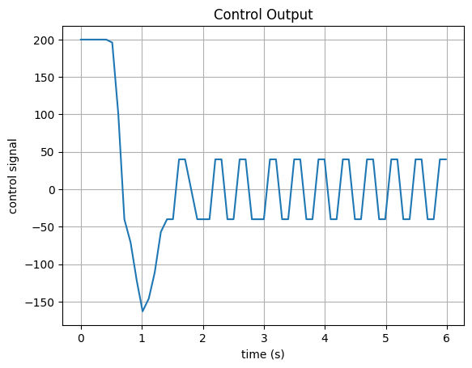
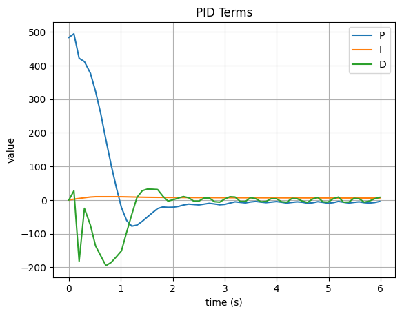
The results for $K_p = 0.4$, $K_i = 0.02$, and $K_d = 0.15$ are shown below. The robot reached the target distance without overshoot because we increased the derivative gain. So the D term provided more damping to the system, which reduced the overshoot and allowed the robot to settle at the target distance more smoothly.
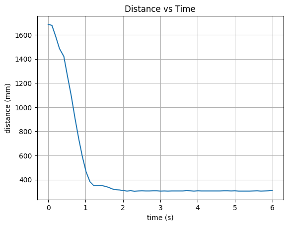
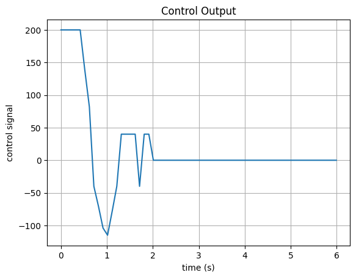
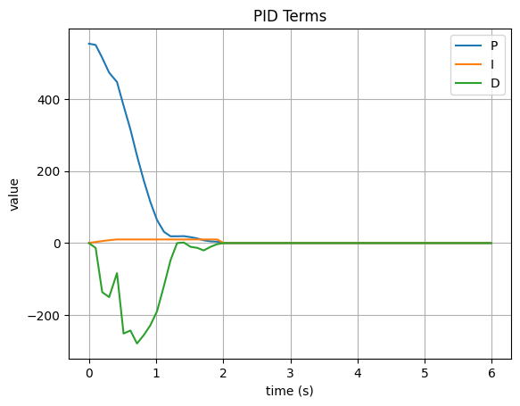
I also tested disturbing the robot after it had already reached the target. The robot was still able to return to the desired position, which further demonstrated the stability of the PID controller.
Then I computed the speed of the robot during the motion. It can really reach a very high speed at one moment and reach the target immediately. The maximum speed was around 6.975 m/s, but it would be not very precise because the time interval between two valid ToF measurements was around 0.1s, which was not very small. So the speed estimation could be quite noisy and inaccurate. However, it still showed that the robot could move very fast under PID control.
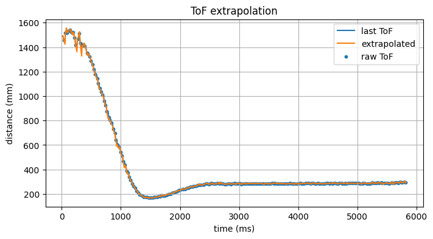
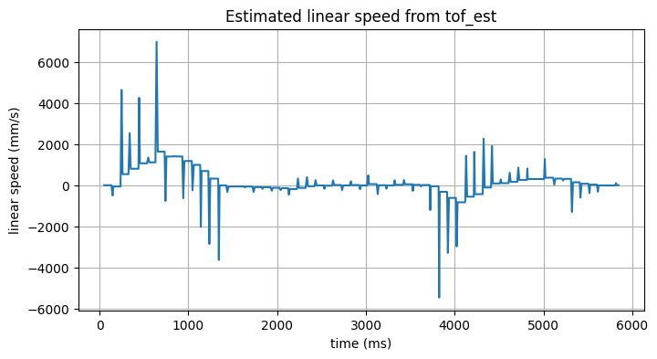
Extrapolation
In this part, I implemented extrapolation based on estimated velocity. Using two valid ToF measurements, I computed the robot’s velocity over that interval. Once two valid samples were available, I set a flag have_two to true.
The velocity was estimated from two consecutive valid measurements as
$$v = \frac{d_2 - d_1}{t_2 - t_1} \notag$$
where (d_1) and (d_2) are two consecutive distance measurements, and (t_1) and (t_2) are their corresponding timestamps. Based on this estimated velocity, the extrapolated distance at the current time was computed as
$$d_{\text{est}}(t) = d_2 + v (t - t_2) \notag$$
where (t) is the current time before the next valid ToF measurement arrives.
After that, I continuously updated the current time now, while t2 was only updated when a new ToF measurement arrived. Therefore, before the next ToF update was received, I assumed the robot continued moving at the previously estimated velocity and extrapolated the distance to the current time.
When a new ToF measurement became available, I shifted the stored values and updated t2 and d2 with the newest data. This allowed the extrapolated estimate to be updated dynamically over time.
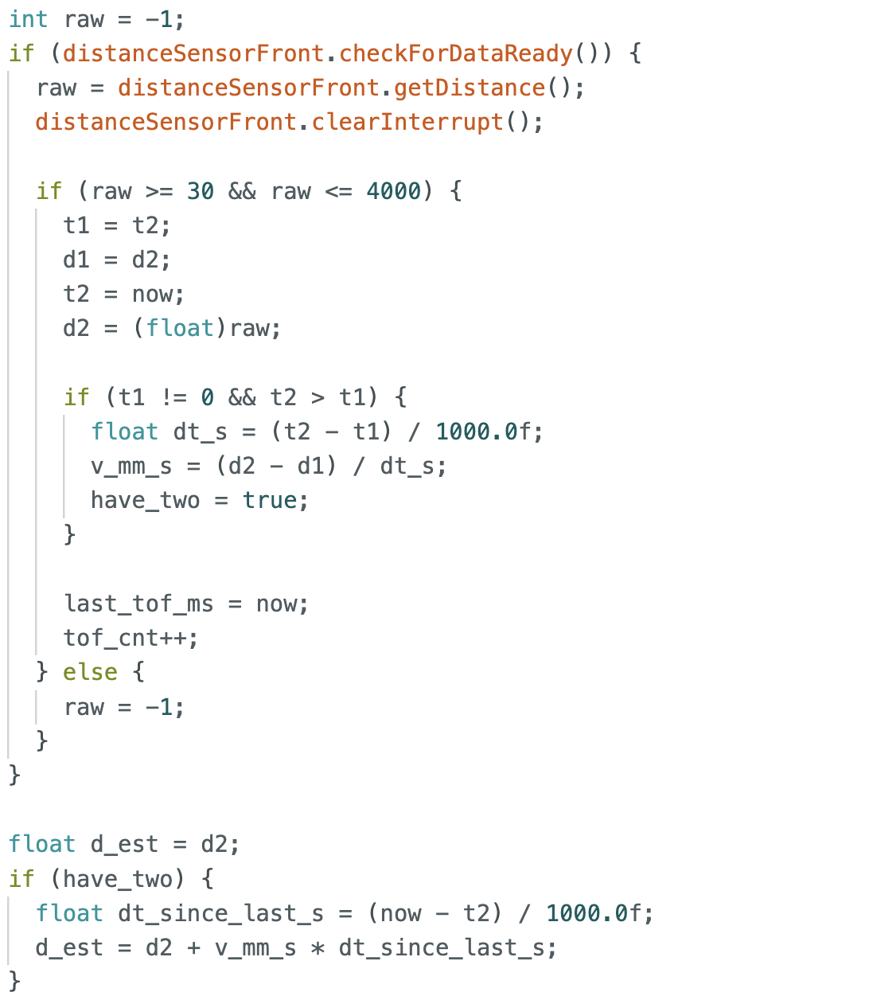
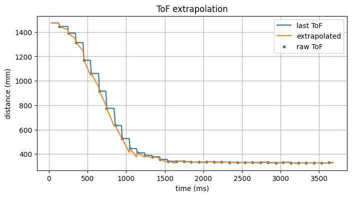
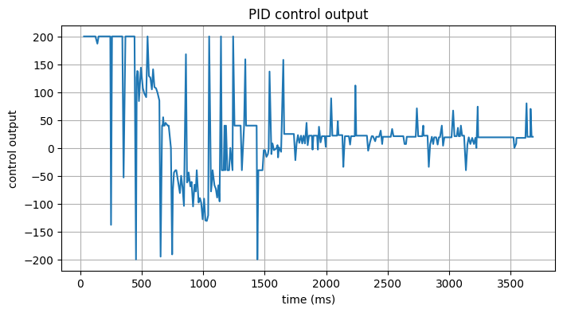
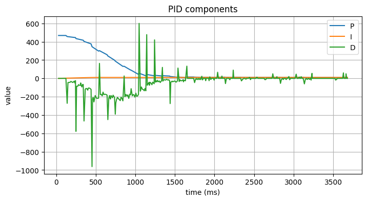
I also counted both the PID update rate and the valid ToF update rate. The PID loop ran at about 106 Hz. And the ToF update rate was around 10 Hz, which was consistent with the previous lab. This meant that the extrapolation was providing estimates at a much higher frequency than the raw ToF measurements, which could help improve the responsiveness of the PID controller.
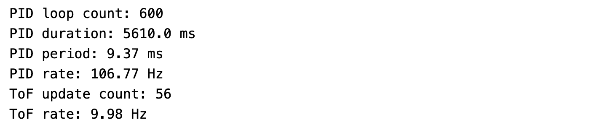
To further evaluate this method, I increased the ToF sampling frequency and compared it with the previous setting. The new ToF measurements became denser, and the corresponding sampling frequency was about 40 Hz. At the same time, the extrapolated curve became smoother.
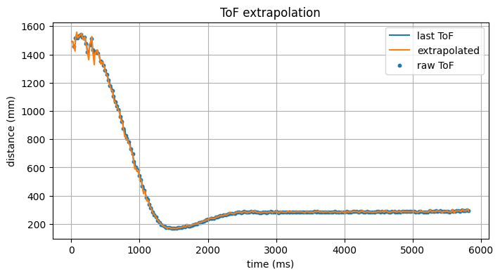
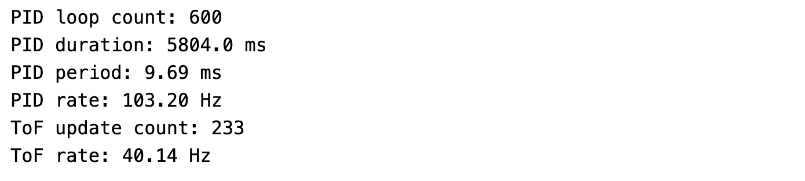
Wind-up Protection
In this section, I implemented integral wind-up protection by limiting the accumulated integral term.
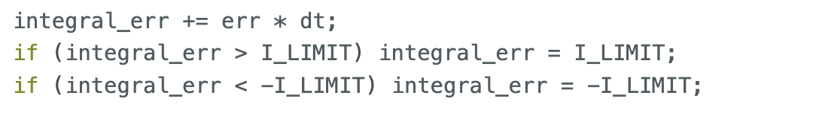
I also performed a comparison experiment to show its effect. Without integral protection, the robot accumulated too much integral error during motion and collided with the wall. After applying wind-up protection, the robot was able to avoid hitting the wall. This demonstrated that integral protection is necessary in this control task.
The results without wind-up protection are shown below. The robot overshot the target distance and collided with the wall due to the accumulated integral error.
The results with wind-up protection are shown below. The robot reached the target distance without overshooting and avoided colliding with the wall, demonstrating the effectiveness of the integral wind-up protection.
Reference
Thanks to Professor Helbling and the TAs for their help during lab sessions. I refer to Wenyi Fu's and Trevor's websites as guidance and as references for web design. I used Nano Banana Pro to help me with generating the cover of my lab, which is shown in the home page.
Note
In the report, I did not put some code implementations of simple functions and roughly duplicate parts. If necessary, please feel free to contact me.